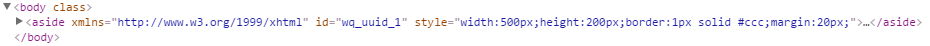

6.Aside (HTML5)
<aside>의 역할은 article과 비슷한 기능을 갖고 있는 tag입니다. 일반적으로 측면에 위치하게 되어 있습니다.
6.1Property
Property | Description |
|---|---|
id | 컴포넌트의 ID로 전역객체로 할당되며 script에서 본 id로 컴포넌트에 접근이 가능하다. |
6.2브라우저 캡쳐화면
[그림 6-1]01
6.3CSS Overriding

[그림 6-2]02
No | Class | Description |
|---|---|---|
1 |
| websquare의 style 편집기에서 해당 style을 직접 수정합니다. |
6.4주의사항 및 Tip
html5에 추가 요소로서 웹스퀘어 에서의 컴포넌트 로서는 따로 속성이 없으며 필요할경우 Attribute Add로 버튼으로 속성을 추가해준다.